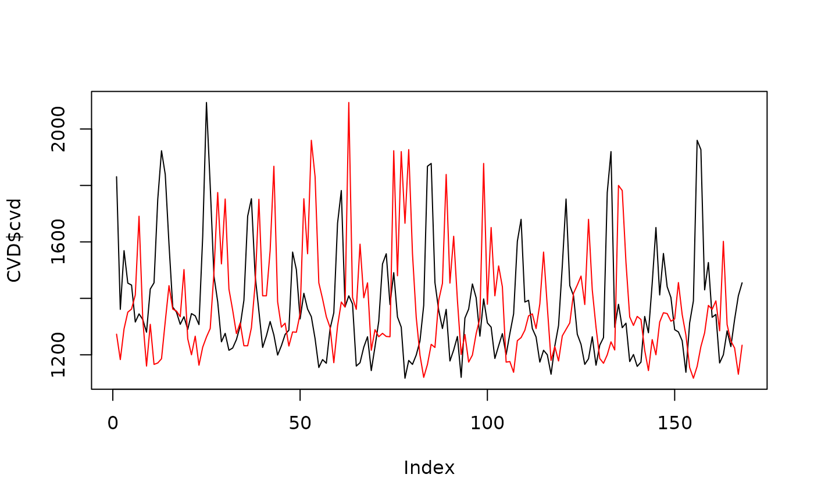

Generates random linear surrogate data of a time series with the same second-order properties.
Details
The AAFT uses phase-scrambling to create a surrogate of the time series that
has a similar spectrum (and hence similar second-order statistics). The AAFT
is useful for testing for non-linearity in a time series, and is used by
nonlintest.
References
Kugiumtzis D (2000) Surrogate data test for nonlinearity including monotonic transformations, Phys. Rev. E, vol 62 no. 1, 2000. doi:10.1103/PhysRevE.62.R25
Author
Adrian Barnett a.barnett@qut.edu.au
Examples
# \donttest{
aaft(CVD$cvd, nsur = 1)
#> [,1]
#> [1,] 1263
#> [2,] 1231
#> [3,] 1138
#> [4,] 1117
#> [5,] 1325
#> [6,] 1361
#> [7,] 1960
#> [8,] 1409
#> [9,] 1375
#> [10,] 1387
#> [11,] 1333
#> [12,] 1246
#> [13,] 1160
#> [14,] 1187
#> [15,] 1232
#> [16,] 1163
#> [17,] 1409
#> [18,] 1402
#> [19,] 1782
#> [20,] 1380
#> [21,] 1451
#> [22,] 1433
#> [23,] 1261
#> [24,] 1343
#> [25,] 1176
#> [26,] 1234
#> [27,] 1159
#> [28,] 1226
#> [29,] 1346
#> [30,] 1319
#> [31,] 1455
#> [32,] 1362
#> [33,] 1388
#> [34,] 1430
#> [35,] 1249
#> [36,] 1287
#> [37,] 1200
#> [38,] 1270
#> [39,] 1297
#> [40,] 1120
#> [41,] 1172
#> [42,] 1289
#> [43,] 1592
#> [44,] 1522
#> [45,] 1775
#> [46,] 1558
#> [47,] 1355
#> [48,] 1312
#> [49,] 1171
#> [50,] 1174
#> [51,] 1174
#> [52,] 1216
#> [53,] 1264
#> [54,] 1454
#> [55,] 1752
#> [56,] 1527
#> [57,] 1393
#> [58,] 1318
#> [59,] 1201
#> [60,] 1281
#> [61,] 1250
#> [62,] 1180
#> [63,] 1216
#> [64,] 1166
#> [65,] 1200
#> [66,] 1308
#> [67,] 1923
#> [68,] 1502
#> [69,] 1412
#> [70,] 1403
#> [71,] 1296
#> [72,] 1307
#> [73,] 1183
#> [74,] 1144
#> [75,] 1345
#> [76,] 1273
#> [77,] 1200
#> [78,] 1455
#> [79,] 1927
#> [80,] 1559
#> [81,] 1393
#> [82,] 1409
#> [83,] 1275
#> [84,] 1293
#> [85,] 1232
#> [86,] 1227
#> [87,] 1292
#> [88,] 1327
#> [89,] 1298
#> [90,] 1447
#> [91,] 1839
#> [92,] 1920
#> [93,] 1751
#> [94,] 1868
#> [95,] 1753
#> [96,] 1515
#> [97,] 1224
#> [98,] 1199
#> [99,] 1335
#> [100,] 1265
#> [101,] 1325
#> [102,] 1302
#> [103,] 1878
#> [104,] 1569
#> [105,] 1445
#> [106,] 1456
#> [107,] 1361
#> [108,] 1351
#> [109,] 1358
#> [110,] 1229
#> [111,] 1275
#> [112,] 1290
#> [113,] 1334
#> [114,] 1620
#> [115,] 1680
#> [116,] 1831
#> [117,] 2094
#> [118,] 1666
#> [119,] 1378
#> [120,] 1313
#> [121,] 1369
#> [122,] 1336
#> [123,] 1266
#> [124,] 1229
#> [125,] 1330
#> [126,] 1564
#> [127,] 1800
#> [128,] 1418
#> [129,] 1491
#> [130,] 1441
#> [131,] 1338
#> [132,] 1480
#> [133,] 1155
#> [134,] 1278
#> [135,] 1237
#> [136,] 1217
#> [137,] 1267
#> [138,] 1362
#> [139,] 1691
#> [140,] 1651
#> [141,] 1602
#> [142,] 1398
#> [143,] 1272
#> [144,] 1285
#> [145,] 1178
#> [146,] 1166
#> [147,] 1257
#> [148,] 1131
#> [149,] 1293
#> [150,] 1349
#> [151,] 1479
#> [152,] 1370
#> [153,] 1379
#> [154,] 1345
#> [155,] 1254
#> [156,] 1276
#> [157,] 1170
#> [158,] 1264
#> [159,] 1298
#> [160,] 1199
#> [161,] 1280
#> [162,] 1316
#> [163,] 1453
#> [164,] 1391
#> [165,] 1313
#> [166,] 1335
#> [167,] 1186
#> [168,] 1304
surr <- aaft(CVD$cvd, nsur = 1)
plot(CVD$cvd, type = "l")
lines(surr[ ,1], col = "red")

# }